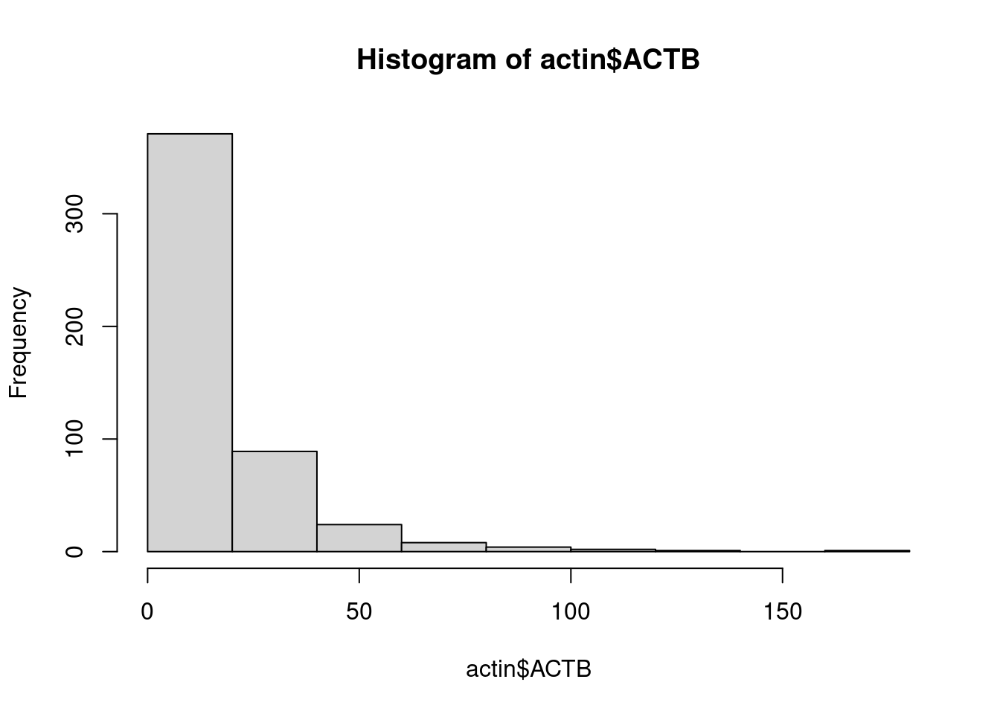

2 Standard Preprocessing using Seurat
Some standard steps are usually carried out in scRNA-Seq prior to further analysis as QC, dimensional reduction and marker visualization. Here, we will use the Seurat R package to perform these steps which is increasingly becoming the most popular tool, however, there are some other options as SingleCellExperiment in R and scanpy available for python. First, we need to define a Seurat object.
2.1 Creating Seurat object
We create a Seurat object using the CreateSeuratObject function as follows. Use the ?function helper
in R to get information about the parameters that are need to be provided to the function.
- counts - a count matrix. It can be a matrix, sparse matrix or dataframe.
- project - A single character string. Correspond to a arbitrary name to label the object.
- assay - A single character string. An arbitrary name that usually is assigned to label the type of sequencing information, for example, RNA, spliced RNA, ATAC, etc…
- min.cells - An integer. Indicates a threshold of the number of cells for which a feature was recorded. Cells below that threshold will be filtered out.
- min.features - An integer. Similar to min cells but for the number of features of a cell.
library(Seurat)
pbmc.seurat <- CreateSeuratObject(
counts = pbmc.mtx,
project = 'PBMC',
assay = 'RNA',
min.cells = 1,
min.features = 1
)The variable pbmc.seurat now contains the Seurat object that we can feed into the package.
If we print the variable we get information about the number of genes and cells.
pbmc.seurat## An object of class Seurat
## 12673 features across 500 samples within 1 assay
## Active assay: RNA (12673 features, 0 variable features)2.2 Exploring the Seurat object
Seurat objects can be seen as a container of different features. At this step it contains our gene expression matrix, but in addition it can store metadata, processed data, information from different assays, for example, scATACSeq, scCITESeq or unspliced transcripts.
We can explore the seurat object using the $ to explore its metadata in combination with the tab
key. For example, during the creation of the seurat object the number of counts quality metric
is calculated and added to the metadata. We can explore this metric by accessing the metadata
as follows.
pbmc.seurat$nCount_RNA %>% head## AAAGAGACGGACTT-1 AAAGATCTGGGCAA-1 AAAGCAGATATCGG-1 AAAGTTTGATCACG-1
## 1151 1347 4584 1268
## AAATCAACCCTATT-1 AAATGTTGTGGCAT-1
## 5676 2761We can do the same with the @ operator to explore the different slots. For example,
we can extract the original count matrix that we used to create the seurat object as follows:
pbmc.seurat@assays$RNA@counts[1:5, 1:5]## 5 x 5 sparse Matrix of class "dgCMatrix"
## AAAGAGACGGACTT-1 AAAGATCTGGGCAA-1 AAAGCAGATATCGG-1 AAAGTTTGATCACG-1
## AL627309.1 . . . .
## AP006222.2 . . . .
## LINC00115 . . . .
## NOC2L . . . .
## PLEKHN1 . . . .
## AAATCAACCCTATT-1
## AL627309.1 .
## AP006222.2 .
## LINC00115 .
## NOC2L .
## PLEKHN1 .2.3 Extracting expression values
Next, we visualize gene counts to see its behavior. We take a look at the expression of the
house keeping gene ACTIN Beta and plot an histogram of count values. We will use the
the function FetchData which is used to extract values from selected features in the Seurat
object and then plot it using an histogram.
actin <- FetchData(pbmc.seurat, vars = 'ACTB')
hist(actin$ACTB)
2.4 Quizzes
Found and display the metadata in the seurat object
TIP: You can have
a look at the documentation
of the seurat objects from the GitHub Wiki.
Answer:
pbmc.seurat@meta.data %>% head
2.5 Exercises
Create a Seurat object
The file in the follwing URL:
https://raw.githubusercontent.com/caramirezal/caramirezal.github.io/master/bookdown-minimal/data/pbmc_10X_250_cells.tsv
contains 250 cells downsampled from the 10x PBMC data and stored in tsv format
- Load the count matrix in tsv format
- Create a Seurat object using the count matrix
- How many features and cells are present in the count matrix?